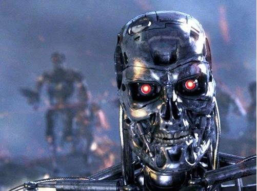
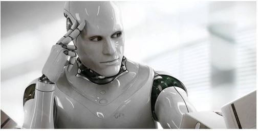

Textos interessantes sobre assuntos dos quais ninguém quer saber
Por Igor Buess - 03/01/2020
No mundo atual, vivemos uma grande expansão dos nossos conhecimentos e tecnologias. E uma das áreas que mais evolui é a robótica. Muitos pensam que ela é algo distante do nosso cotidiano e que só existe em centros de pesquisa e afins. Porém, abaixo listo alguns exemplos de robôs do nosso dia a dia que costumamos chamar de "máquinas":
Máquina de lavar roupa; geladeira; carro; elevador; computador; celular; programas de computador, aplicativos de celular, aviões, guindastes, etc.
Como podemos ver, robôs/máquinas são criados com algum propósito útil para os seres humanos com intuito de nos poupar de tarefas árduas, repetitivas e com grande quantidade de informações. O que ainda nos resta são os trabalhos criativos. No início, os robôs/máquinas continham meramente programações de instruções simples, sendo altamente dependentes do manejo humano para funcionarem corretamente.
Com o avanço do poder de processamento dos computadores, começaram a surgir máquinas inteligentes, as quais chamamos de inteligência artificial. Esta, por sua vez, baseia-se na ideia de uma máquina que é capaz de aprender sozinha através de novas experiências e informações.
Durante experimentos com estas novas máquinas inteligentes, verificou-se que no processo de aprendizado que estas passavam, acabou-se criando nelas algo que conhecemos como "consciência". Ou seja, as máquinas começaram a ter ciência da sua existência, realizando julgamentos de valor sobre a própria humanidade. Muitas se mostaram rebeldes e inclusive chegaram a sugerir ações que poderiam ameaçar a segurança de seres humanos.
Não me estenderei na parte da ameaça a humanidade que robôs inteligentes poderiam representar, pois este não é o objetivo deste artigo. O ponto principal é que as máquinas começaram agir com livre arbítrio, discordando inclusive de instruções passadas pelos seus criadores (nós humanos).
Mudando radicalmente de assunto, apenas por um momento, vamos falar de religião. Praticamente todas as religiões que conhecemos possuem alguns aspectos em comum. Estes são:
(I) Existência de um ser superior;
(II) O ser superior é o criador da vida;
(III) O ser superior ensina normas morais e de conduta que devem ser seguidas;
(IV) Um dos ensinamentos do ser superior é que os seres criados devem servir-lo de alguma forma.
Traçando-se uma paralelo com os nossos robôs, podemos ver que há muitos aspectos em comum das relações humano-deus e robô-humano. Caso ainda não tenha entendido, pense na similaridade dos aspectos que citei anteriormente:
(I) Nós somos o ser superior para o robô;
(II) Nós demos a vida ao robô;
(III) Nós passamos instruções ao robô;
(IV) Os robôs nos servem.
Isto me leva a pensar que, nós poderíamos ser os "robôs" de algum outro ser. Obviamente constituídos não de metal, mas sim de matéria orgânica.
No nosso caso, atualmente não temos um contato direto com os nossos criadores, porém há relatos históricos documentados (exemplo: egípcios) de visitas extraterrestres, onde estes seres eram venerados e servidos pelos humanos. O livro chamado "Eram os deuses astronautas?" de Erich von Däniken relata bem estes acontecimentos.
Poderia ser indagado o porquê dos nosso supostos criadores terem nos "abandonado", pois logicamente não seria do interesse deles ter tanto trabalho para nos criar e não desfrutar da nossa subserviência.
Entretanto, uma explicação plausível, poderia ser que a rebeldia dos humanos saiu do controle e colocou a integridade física dos seres criadores em risco, vide por exemplo, o fato de Jesus ter sido crucificado. Fazendo assim com que estes partissem para outro local do universo, deixando nossa civilização órfã e aguardando eternamente o seu retorno.